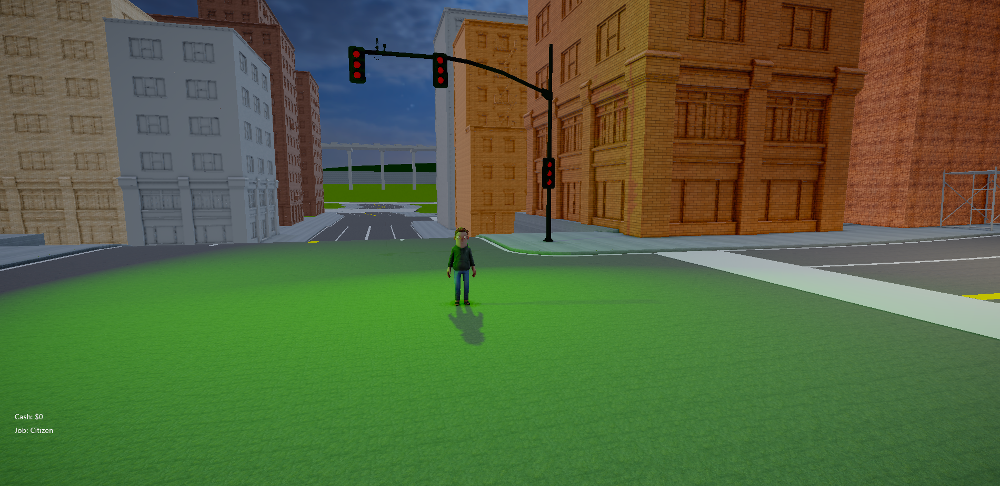
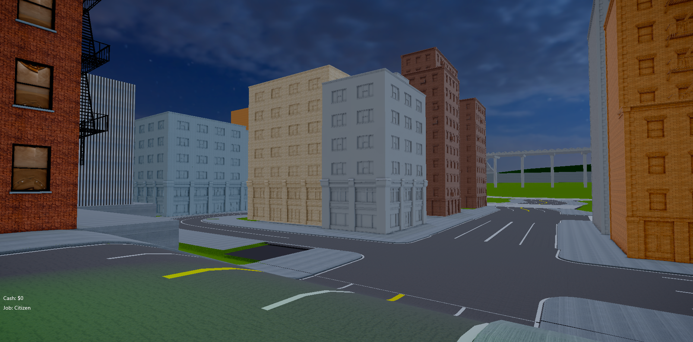

Since the last devlog
The last public update on March 22, 2026 was mostly about a narrower push: keep moving the map, keep code progressing where possible, and get Ghetto 01 into a state that can support more meaningful server-side testing.
That core reality has not changed, but the district does read better now than it did a week ago. The newest work is less about announcing a fresh gameplay system and more about pushing the environment out of raw blockout territory so the city starts feeling intentional, performant, and testable instead of merely assembled.
Optimization work is part of the story
This pass was not only about making screenshots look better. A real part of the work went into interior optimization, LOD creation, and light optimization so the district has a better chance of holding up once more of the city is active at once.
- Interior spaces are being trimmed and simplified so they stop carrying unnecessary cost before they are even in full gameplay use.
- LOD work is being pushed so buildings and larger environment pieces can read correctly at distance without forcing the client to pay full detail all the time.
- Lighting is being optimized so the nighttime atmosphere can stay intact without turning every block into a performance problem.
That optimization layer matters because Ghetto 01 is supposed to become playable space, not just a set of promo angles. If the district cannot hold together under real movement and real camera reads, then deeper systems testing still gets delayed.
Materials and street read are improving
The clearest change in the latest captures is that Ghetto 01 is starting to hold together as an actual street space. Buildings have more convincing surface treatment, window reads are stronger, traffic lights and intersections are giving the roads more structure, and the district silhouette is less abstract than it was in the previous post.
It is still not a final-art pass, and it is still visibly in progress, but the environment is doing a better job of communicating:
- where routes open up,
- where intersections matter,
- how the block massing frames the player,
- and what kind of district identity this part of the city is aiming for.
That matters because map work at this stage is not just decoration. It is about getting the space readable enough that roleplay movement, pressure, and encounter flow can actually be evaluated.
New captures


What has not changed yet
The honest version is still the same one from the March 22 entry: deeper systems validation is gated by having a stronger playable map state first.
That means this stretch is more about making the world testable than about claiming a large new code milestone. The underlying systems work described in the last devlog still matters, but the immediate requirement is getting Ghetto 01 into better condition for real in-engine and eventually server-sided checks.
Right now that includes practical environment-side work such as:
- optimizing interiors before they become a bigger drag on the build,
- creating and validating LODs across the district shell,
- and tightening lights so the scene keeps its mood without wasting budget.
Parallel site work
Outside the map itself, the public-facing site also kept moving in smaller ways during this stretch.
- The devlog/archive surface was cleaned up so entries are easier to browse by month.
- Devlog routing and supporting links were tightened up across the public site.
- Studio-facing pages continued getting maintenance while AfterDarkRP environment work stayed active.
None of that replaces gameplay progress, but it does keep the public-facing side of the project from drifting while the heavier map pass continues.
What comes next
- Keep tightening Ghetto 01 materials, silhouettes, and intersection readability.
- Continue the interior, LOD, and light optimization passes so the map is easier to trust under live play conditions.
- Push the district further out of placeholder territory so traversal and encounter flow are easier to judge.
- Return to deeper system validation once the map supports cleaner real-world testing conditions.
This is still a map-first phase. The difference now is that the district is beginning to read less like scaffolding and more like a place that can actually support the next round of testing.